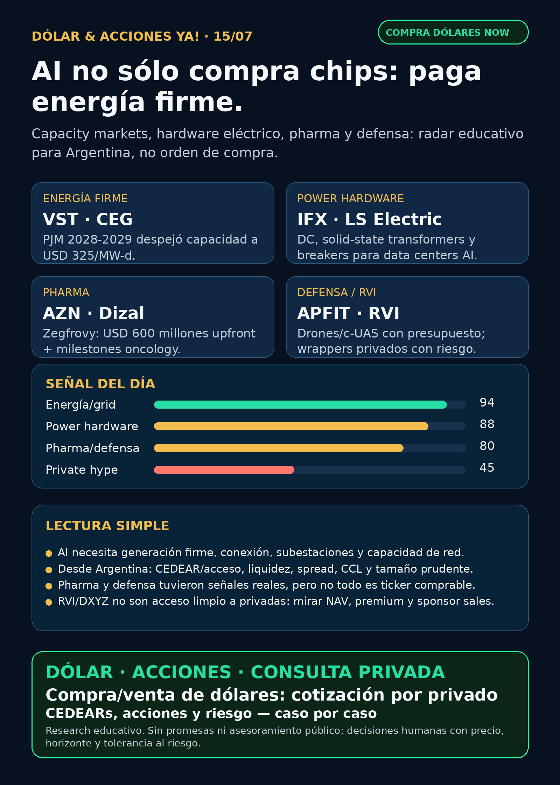

AI también paga el enchufe.
VST y CEG mostraron capacidad eléctrica a USD 325/MW-d; Infineon + LS ELECTRIC agregan hardware DC; AZN, defensa y RVI dejan señales verificadas.
Texto WhatsApp
Placa del día

Dólar & Acciones YA — 15/07
Fecha de edición: 2026-07-15. Research educativo para Argentina. No es recomendación personalizada de compra o venta.
Lectura simple del día
La tesis de hoy es directa: la inteligencia artificial no sólo consume chips; también empieza a pagar electricidad firme, capacidad de red, conversión eléctrica y hardware de potencia. En criollo: si falta enchufe confiable, el dueño de generación disponible, conexión, subestación, transformadores, breakers o power semiconductors cobra un peaje.
Para alguien en Argentina, la segunda capa es igual de importante: buena empresa global no significa buen precio, ni buen instrumento local, ni buen tamaño dentro de una cartera. Antes de ejecutar hay que mirar CEDEAR o vía internacional, liquidez, spread, comisiones, MEP/CCL, moneda y riesgo.
Contexto dólar público usado como referencia educativa: BlueLytics marcó oficial vendedor ARS 1.501 y blue vendedor ARS 1.520 con timestamp 2026-07-14 19:45 -03. CriptoYa marcó MEP AL30 24h ARS 1.518,33 y CCL AL30 24h ARS 1.561,04 al 2026-07-14 16:59 -03; USDT ask ARS 1.560,126 al 2026-07-15 02:20 -03. Para operar de verdad se confirma en broker vivo.
Ordenado por valor educativo y fuerza de señal de radar, no por recomendación de compra.
Tesis central
El mercado AI se está ensanchando. No alcanza mirar NVIDIA, software o modelos. Hoy la evidencia fresca va por tres carriles:
1. Generación y capacidad eléctrica: Vistra (`VST`) y Constellation (`CEG`) presentaron 8-Ks por la subasta PJM 2028-2029 a USD 325/MW-d. Cuando la red necesita energía firme, la capacidad disponible se vuelve activo estratégico.
2. Power hardware: Infineon (`IFX.DE` / `IFNNY`) y LS ELECTRIC firmaron un MoU para infraestructura DC, solid-state transformers y solid-state circuit breakers para data centers AI. No es sólo “más electricidad”; es cómo se convierte, protege y distribuye.
3. Pharma y defensa fuera del hype: AstraZeneca (`AZN`) licenció Zegfrovy de Dizal por USD 600 millones upfront y hasta USD 900 millones en milestones. Defensa mostró demanda real vía APFIT por más de USD 500 millones en software, drones, counter-UAS y sistemas autónomos.
Señales educativas del día
1) Energía / capacity markets — Vistra (`VST`) y Constellation (`CEG`)
- **Qué pasó:** ambos presentaron 8-K el 14/7 por los resultados de la subasta PJM 2028-2029.
- **Dato clave:** VST despejó 10.924,40 MW a USD 325/MW-d. CEG informó 18.875 MW despejados, incluyendo 15.700 MW nucleares y 3.175 MW fossil/others.
- **Fuente primaria:** VST SEC 8-K: https://www.sec.gov/Archives/edgar/data/1692819/000114036126028454/ef20077988_8k.htm ; CEG SEC 8-K: https://www.sec.gov/Archives/edgar/data/1868275/000186827526000080/ceg-20260714.htm
- **Lectura en criollo:** si AI y data centers tensan la red, la energía confiable empieza a valer más. El peaje no está sólo en GPUs: también está en generación firme, nuclear, gas y capacidad disponible.
- **Accionable Argentina:** no asumir CEDEAR ni acceso local limpio. Primero verificar instrumento, liquidez, spread y broker. En cuenta USA puede ser más directo, pero igual requiere precio, riesgo y tamaño.
- **Estado:** señal fortalecida / en radar.
2) Power hardware / DC infrastructure — Infineon + LS ELECTRIC
- **Qué pasó:** Infineon y LS ELECTRIC firmaron un MoU para soluciones DC de alta eficiencia para AI data centers y redes de nueva generación.
- **Dato clave:** foco en power conversion systems, energy storage, solid-state transformers y solid-state circuit breakers. La fuente sectorial indica que los SST pueden ser hasta 30% más pequeños y livianos que transformadores convencionales.
- **Fuente:** EEJournal, 14/7: https://www.eejournal.com/industry_news/infineon-and-ls-electric-collaborate-to-advance-high-efficiency-direct-current-power-solutions-for-ai-data-centers/
- **Lectura en criollo:** después del transformador viene otra capa: corriente continua, semiconductores de potencia, protección eléctrica y breakers más inteligentes. Es infraestructura invisible, pero sin eso no escala el data center.
- **Accionable Argentina:** IFX.DE Alemania / IFNNY OTC; LS ELECTRIC Corea. Acceso local pendiente. Para radar educativo se compara con GEV, Siemens Energy, Hitachi, HD Hyundai Electric, Hyosung y ETFs industriales.
- **Estado:** fortalece tesis / vigilar.
3) Pharma / oncology M&A — AstraZeneca (`AZN`) + Dizal / Zegfrovy
- **Qué pasó:** AstraZeneca firmó acuerdo exclusivo global para desarrollar y comercializar Zegfrovy (sunvozertinib), inhibidor oral EGFR de Dizal.
- **Dato clave:** USD 600 millones upfront y hasta USD 900 millones por milestones, más royalties. Está aprobado en Estados Unidos y China para NSCLC con mutaciones EGFR exon 20 insertion después de quimioterapia basada en platino. AZN dijo que no impacta guidance 2026.
- **Fuente primaria:** AZN SEC 6-K, 14/7: https://www.sec.gov/Archives/edgar/data/901832/000165495426006637/a2449m.htm
- **Lectura en criollo:** pharma no es sólo GLP-1. Big pharma también compra pipeline oncológico específico. Pero licenciar una droga no garantiza retorno: hay riesgo regulatorio, comercial, de competencia y de expansión de indicaciones.
- **Accionable Argentina:** revisar CEDEAR/acceso antes de hablar de cartera.
- **Estado:** fortalece oncology / vigilar pipeline completo.
4) Defensa / guerra física — APFIT Pentágono
- **Qué pasó:** DefenseScoop reportó nueva tanda de procurements APFIT por más de USD 500 millones.
- **Dato clave:** incluye más de USD 70 millones en software y varias compras en autonomous systems, counter-UAS, drones, spacecraft, resiliencia, comunicaciones y energía táctica.
- **Fuente:** DefenseScoop, 14/7: https://defensescoop.com/2026/07/14/pentagon-announces-new-apfit-procurements-software/
- **Lectura en criollo:** defensa no es sólo Lockheed o Raytheon. Hay presupuesto real para software militar, drones, counter-drone, autonomía y space. Pero no se puede asignar ese dinero a AVAV u otro ticker si la fuente no lo dice.
- **Accionable Argentina:** para exposición global mirar ITA/XAR/primes/acciones USA según acceso; AVAV, KTOS y similares son high-beta y requieren mucho control de precio y riesgo.
- **Estado:** fortalece carril defensa / vigilar.
5) Private markets wrappers — `RVI` + Robinhood Ventures
- **Qué pasó:** nuevo Form 4 mostró ventas adicionales del sponsor Robinhood Markets en RVI; además apareció 40-APP para Robinhood Ventures Fund I-IV y joint transactions.
- **Dato clave:** último Form 4: 21.109 shares vendidas por aprox. USD 639.911,92, VWAP aprox. USD 30,31. Combinado 6–13/7: 60.352 shares, aprox. USD 1,88 millones, VWAP aprox. USD 31,19.
- **Fuentes primarias:** Form 4: https://www.sec.gov/Archives/edgar/data/2085091/000178387926000093/wk-form4_1784062886.xml ; 40-APP: https://www.sec.gov/Archives/edgar/data/2085091/000095010326010574/dp250003_40app.htm
- **Lectura en criollo:** RVI no es SpaceX ni OpenAI directo. Es un wrapper con NAV, premium/descuento, liquidez, sponsor sales, estructura de fondo y restricciones. Sirve para aprender, no para perseguir FOMO.
- **Accionable Argentina:** no accionable públicamente sin NAV, holdings, volumen, spread y acceso real por broker local/USA.
- **Estado:** vigilar / riesgo de instrumento.
Watchlist base — seguimiento rápido
- RKLB: sin filing nuevo fuerte después del Form 4 de Peter Beck ya verificado. Tesis técnica vigente, pero con overhang táctico por insider sale, deuda e integración Iridium.
- NVDA: sin SEC nuevo fuerte; mantener moat estructural en GPU, networking, software y cooling, pero no elevar rumores de NVIDIA + Mitsubishi sin primaria.
- PLTR: sin señal nueva fuerte. Próximo catalyst: earnings Q2 2026 anunciado para 3/8.
- TSM: señal del 13/7 sigue vigente: revenue junio 2026 +67,9% interanual y H1 +35,6% vía SEC 6-K; no repetir como novedad del día.
- MU: HBM/memory cycle sigue en radar; sin filing primario nuevo.
- GOOGL/GOOG: sin señal primaria nueva fuerte en cloud/TPU/Waymo.
- AAPL: Apple/Broadcom custom silicon queda como tesis previa; sin novedad primaria nueva.
- HOOD: actividad SEC ligada a RVI/Robinhood Ventures; Agentic Trading/crypto rails sigue como caso educativo, sin novedad mejor hoy.
- TSLA: robotaxi/FSD con ruido secundario; no elevar sin primaria.
- ASML: esperar release oficial de earnings; previews no son hecho.
- Gold / GLD / GOLD / B: instrumento ambiguo; no usar precio ni tesis hasta confirmar qué es.
- SNDK, CBRS, AVGO: revisados sin señal operativa nueva superior; mantener radar estructural según eventos previos.
Energía y AI power
- Señal principal: VST / CEG y subasta PJM. Esto agrega una capa al radar AI-power: capacity markets, nuclear, gas, generación firme y riesgo regulatorio.
- Power hardware: Infineon + LS ELECTRIC refuerzan DC grids, solid-state transformers y breakers. Además sigue vigente Hitachi Energy 110kV para data center Frankfurt como evidencia de conexión física.
- Proxies globales a seguir: GEV, Siemens Energy (ENR.DE), Hitachi (6501.T/HTHIY), HD Hyundai Electric, Hyosung, Infineon y ETFs industriales/utility según instrumento.
- Argentina energía: YPF recompra de notas del 13/7 ya indexada; PAMP, TGS, CEPU, VIST revisadas sin señal nueva fuerte para titular. Siguen relevantes como radar educativo local cuando energía sea tesis central.
Pharma / salud
- AZN / Dizal / Zegfrovy: señal positiva de oncology licensing, con aprobaciones parciales y expansión pendiente.
- AZN / IONS / Wainua: señal negativa vigente por Phase III CARDIO-TTRansform fallido en ATTR-CM. Una empresa puede tener una señal positiva y otra negativa al mismo tiempo.
- NVO: buyback vigente hasta DKK 15.000 millones; no es catalyst clínico GLP-1.
- LLY / orforglipron y HIMS/telehealth GLP-1: ruido alto, primaria débil. No publicar aprobación fresca sin FDA/company/openFDA actual.
Radar amplio fuera de watchlist
- Defensa / guerra física: AVAV, GE, RTX, LMT, NOC, GD, HWM, KTOS, BA, ITA/XAR revisados. Señal sectorial fuerte por APFIT, pero no ticker-specific salvo nueva fuente primaria.
- Autonomous mobility / physical AI: Tesla, Waymo/Alphabet, Uber, Zoox/Amazon y Joby revisados sin primaria nueva fuerte. Mantener seguimiento regulatorio, permisos, seguridad y unit economics.
- Space / orbital AI: SPCX, SpaceX, Starlink, RKLB y wrappers revisados. Sin SEC material nuevo para SpaceX/SPCX en esta ventana. No convertir Stocktwits/price targets en verdad.
- Crypto gobernado / agentic finance: sin señal nueva superior a Robinhood Chain/Stock Tokens/Agentic Accounts ya indexado. No token casino.
- Private wrappers: DXYZ/ARKVX/AGIX/XOVR/VCX/Forge sin evidencia fresca suficiente; requieren fact sheet, holdings, NAV, premium/descuento, liquidez y acceso.
Red flags / hype para ignorar hoy
- “AI power = comprar cualquier energética”: no. Hay que auditar contrato, deuda, regulación, cash flow, precio y riesgo.
- “RVI/DXYZ son acceso limpio a SpaceX/OpenAI”: no sin NAV, holdings, premium, volumen y restricciones.
- “Aprobación fresca GLP-1” sin FDA/company/openFDA actual: no se publica como catalyst.
- “APFIT significa comprar AVAV”: no si la fuente no asigna contrato a AVAV.
- “Gold/GLD/GOLD/B”: bloqueado hasta confirmar instrumento exacto.
Qué mirar después
1. Earnings/IR de ASML y actualizaciones de semicap/foundry.
2. VST/CEG: traducción de capacity revenues a guidance, cash flow, deuda, múltiplos y regulación.
3. Infineon/LS ELECTRIC: buscar primaria company y mapear instrumentos reales para Argentina/USA.
4. AZN: Zegfrovy 1L sNDA, expansión regulatoria y riesgo pipeline total.
5. Defensa: contratos específicos por compañía, no sólo programas sectoriales.
6. Dólar/MEP/CCL: confirmar cotización viva en broker antes de cualquier decisión operativa.
CTA privado
Si querés comprar o vender dólares, mirar CEDEARs/acciones o pensar una estrategia financiera más personalizada, escribime por privado y lo vemos caso por caso. Cotización y condiciones sujetas a confirmación al momento de operar.
Disclaimer
Esto es research educativo para decisión humana. No es asesoramiento financiero personalizado ni recomendación de compra/venta. Buena empresa no es lo mismo que buen precio, buen instrumento local ni buen tamaño dentro de una cartera.